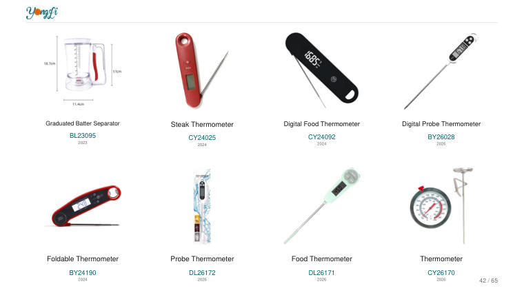
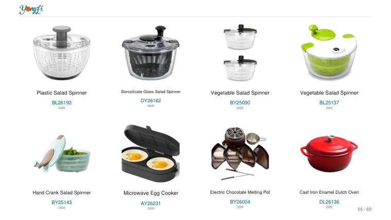

Measuring — Kitchen Tools
Wholesale Measuring from Yongli — BSCI & ISO 9001 certified OEM/ODM manufacturer since 2010. 14 catalogue pages of products, codes and materials. Custom
Catalogue pages42–55
Pages in range14
MaterialsFood-grade materials


About This Range
- Range: 14 catalog pages starting at PDF page 42
- Materials: Food-grade materials
- OEM & ODM: custom mold design, Pantone color matching, custom packaging and logo printing
- Exported to 34 countries across Europe, America, Middle East and beyond
- In-house R&D, tooling and mass production since 2010
Quality & Compliance
BSCIISO 9001FDALFGBEN71REACHRoHS
BSCI & ISO 9001 certified OEM/ODM manufacturer since 2010. Serving customers in 34 countries with one-stop OEM, packaging, design and logistics. Vision: Make Globe Trade Easy.
Products in this range
Product names and codes exactly as printed in the catalogue. Click a page number to jump straight to that page.
| Code | Product | Page |
|---|---|---|
| BL23095 | Graduated Batter Separator | p.42 → |
| CY24092 | Digital Food Thermometer | p.42 → |
| BY26028 | Digital Probe Thermometer | p.42 → |
| CY24025 | Steak Thermometer | p.42 → |
| BY24190 | Foldable Thermometer | p.42 → |
| DL26172 | Probe Thermometer | p.42 → |
| DL26171 | Food Thermometer | p.42 → |
| BY23137 | Square Timer | p.43 → |
| BL26068 | Digital Timer | p.43 → |
| BL23093 | Egg Timer | p.43 → |
| BY25211 | Visual Cooking Timer | p.43 → |
| DY26019 | 38mm Thermometer & Hygrometer | p.43 → |
| CY23004 | Stainless Steel Digital Scale | p.43 → |
| BY25077 | Magnetic Pot Lid Timer | p.43 → |
| CY23028 | Digital Food Scale | p.43 → |
| CY23095 | Round Stainless Steel Digital Scale | p.44 → |
| CL23083 | Stainless Steel Digital Scale | p.44 → |
| BY24064 | Kitchen Digital Scale | p.44 → |
| BY24177 | Kitchen Scale | p.44 → |
| DL25042 | Bamboo Digital Kitchen Scale | p.44 → |
| BY24124 | Digital Kitchen Scale | p.44 → |
| BL24160 | Digital Kitchen Scale | p.44 → |
| DL24140 | Kitchen Digital Scale | p.44 → |
| CL25139 | Square Egg Poacher | p.45 → |
| CY26175 | Egg Poacher | p.45 → |
| BY26190 | Egg Poacher | p.45 → |
| AY26073 | Silicone Anti-Slip Mat | p.45 → |
| AL26034 | 3-Piece Silicone Draining Mat Set | p.45 → |
| AL26095 | Silicone Water Barrier Mat | p.45 → |
| AY26088 | Silicone Draining Mat | p.45 → |
| AY26165 | Silicone Draining Mat | p.45 → |
| AL26118 | Blender Silicone Anti-Slip Mat | p.46 → |
| AY26166 | Large Silicone Draining Mat | p.46 → |
| AY25009 | Silicone Heat Resistant Mat | p.46 → |
| AL26182 | Rectangular Draining Mat | p.46 → |
| AY24046 | Honeycomb Heat Resistant Mat | p.46 → |
| AY25185 | Silicone Heat Resistant Mat | p.46 → |
| AY26136 | Wavy Draining Mat | p.46 → |
| AY26025 | Silicone Draining Mat | p.46 → |
| AL24028 | Silicone Round Steamer Mat | p.47 → |
| DY26187 | Heat-Insulated Non-Slip Mat | p.47 → |
| CY24068 | Non Slip Silicone Kitchen Mat | p.47 → |
| AY26214 | Silicone Non-Slip Mat | p.47 → |
| AY26127 | Silicone Water Splash Guard | p.47 → |
| AY23035 | Silicone Oil Filter Net | p.47 → |
| AL26028 | Silicone Oil Splash Guard | p.47 → |
| AY23002 | Silicone Oil Splash Guard | p.47 → |
| CY26154 | Stainless Steel Splash Guard | p.48 → |
| DZ26047 | Cut-Resistant Finger Guard | p.48 → |
| AY23015 | Silicone Oil Filter Net | p.48 → |
| AY23175 | Pot Edge Splash Guard | p.48 → |
| AL24058 | Iron Shaped Silicone Trivet | p.48 → |
| CL26159 | Magnetic Splash Guard | p.48 → |
| BY26159 | Water Splash Guard | p.48 → |
| BY25195 | Mixer Splash Guard | p.48 → |
| AL24130 | Water Drop Magnetic Trivet | p.49 → |
| AL24089 | Butterfly Silicone Trivet | p.49 → |
| AL25114 | Flower Silicone Trivet | p.49 → |
| AY24162 | Silicone Trivet | p.49 → |
| AL23116 | Silicone Honeycomb Oven Mitt | p.49 → |
| AY24104 | Ribbed Silicone Oven Mitt | p.49 → |
| AL24103 | Silicone Oven Mitt | p.49 → |
| AL26102 | Silicone Oven Mitt | p.49 → |
| DL23037 | Horizontal-Ribbed Oven Mitt | p.50 → |
| DL24074 | Heat Resistant Oven Mitts | p.50 → |
| AL25014 | Dotted Silicone Oven Mitt | p.50 → |
| DY23029 | Oven Mitt | p.50 → |
| DY25158 | Non Slip Silicone Oven Mitt | p.50 → |
| DL23078 | Checkered Oven Mitt | p.50 → |
| DL23038 | Vertical-Ribbed Oven Mitt | p.50 → |
| AY23096 | Silicone Pot Handle Sleeve | p.51 → |
| DY26050 | Bath Glove | p.51 → |
| DY25072 | Heat Resistant Glove | p.51 → |
| AY26044 | Heat-Proof Pot Ear Clip | p.51 → |
| CY23015 | 7-Piece Stainless Steel Kitchen Set | p.51 → |
| BL26001 | Silicone Oil Brush with Bottle | p.51 → |
| AY26045 | Silicone Pot Ear Clip | p.51 → |
| BL24195 | Oil Sprayer Bottle | p.51 → |
| DL24087 | Stainless Steel Oil Sprayer Set | p.52 → |
| DY24110 | Oil Sprayer Bottle | p.52 → |
Showing 80 of 109 rows read from pages 42–55. Open the flip-book for the complete range (p.42–55).
Every range in Kitchen Tools
Sections in printed order - each page lists the products and codes for that range.